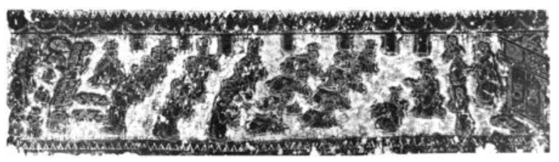
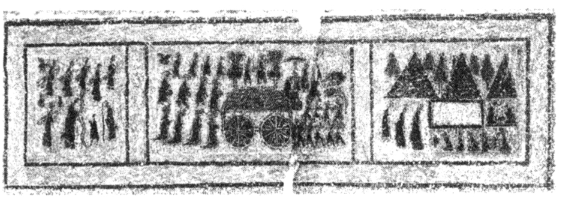

《礼记》丧祭礼
祭的具体仪式，《礼记·祭统》云“生则养，没则丧，丧毕则祭”，《礼记·曲礼下》云“居丧，未葬，读丧礼；即葬，读祭礼”，
整个丧祭过程以“葬”为分界点被笼统划分为丧礼和祭礼，但在丧礼之前还有一些临终礼仪，如问病、正寝等；在下葬之前还有各种奠祭，
如始死奠、小敛奠等，卒哭祭后，还有部分吉祭，如拊祭、小祥祭、大祥祭、禫祭。“士”这一阶层从死前至禫祭的临终礼、丧礼、葬礼、祭礼，将其统称为“丧祭礼”。
临终礼
丧礼之前，在亲人将死之际，有一系列准备工作：首先，打扫干净内外屋室，撤去乐器。然后将病人首朝东安放在正寝的北墙下。最后，将丝绵置于病人鼻下，
如果丝绵不动，表示病人已咽气。此外，逝者必死于正处，即《仪礼·士丧礼》所云“死于适室”。所谓“适室”，为正寝之室，依逝者身份的不同而有别：
君、夫人卒于路寝；大夫、世妇卒于适寝；内子未命，则死于下室，迁尸于寝；士与其妻皆死于寝。虽已经属纩以俟绝气，但基于死而不绝的观念，
生者难以接受亲人己离去这一事实，于是举行“复”礼。“复”，招魂复魄也，意为招魂之礼。招魂的基本仪式为找出一套逝者生前穿过、并能代表逝者身份的衣服，
由一人担任招魂者，搭于左肩，登上屋脊，面朝北喊三声逝者的名字：“皋！某复”（《仪礼·士丧礼》），将衣服从屋前扔下，从西北角下。
堂下的人迅即将衣服盖在逝者身上，希望魂回复于魄，精气返归于躯体。复礼失败后，“主人啼，兄弟哭，妇人哭踊”（《礼记·丧大记》），丧事正式开始。
丧礼
“居丧，未葬，读丧礼”（《礼记·曲礼下》），丧礼包括从复礼无果后至下葬前的一系列仪式，可按时间划分为死？当日、死第二日、死第三日、停殡。
葬礼
殡期即将结束，生者要做好下葬逝者的准备，包括筮宅、卜日、启殡、朝祖庙、设迁祖奠、商祝饰柩、陈明器等，只待葬日下葬。
祭礼
《礼记·祭统》云“生则养，没则丧，丧毕则祭”，《礼记·曲礼下》云“居丧，未葬，读丧礼；即葬，读祭礼”。
下葬之后所进行的一系列仪式，统称为祭礼，而与丧礼有直接关系的祭礼包括虞祭、卒哭祭、拊祭、小祥祭、大祥祭、禫祭。


山东沂南汉画像石墓前室西壁横额的祭祀图
山东微山沟南汉墓画像石